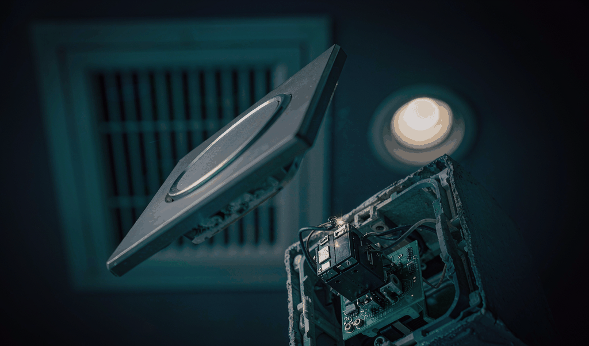
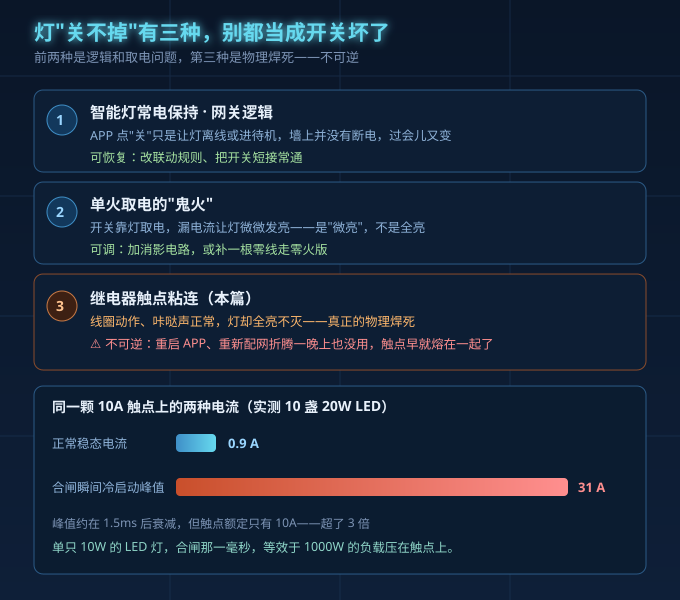
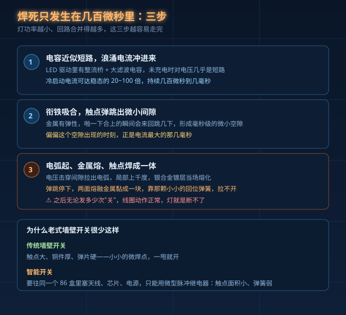
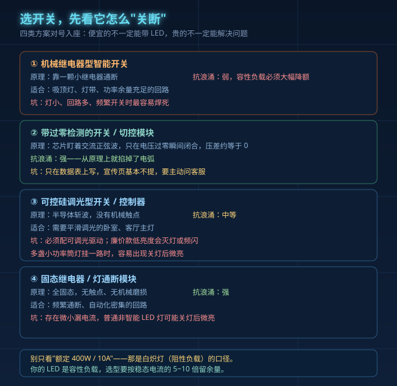

半夜想关灯睡觉，手机点一下"关闭"，APP 显示已关，墙上开关也咔哒响了一声。抬头一看，灯还亮着。
这种帖子我今年看得太多了。什么值得买十月一篇小米智能开关 2 实测帖里有句话很实在：买错开关的代价不是钱，是返工、跳闸、凌晨关不掉的灯。国外有篇工程博客更狠：19 世纪的机械开关，配上 21 世纪的固态负载。
一、APP 说关了，开关也响了，灯还亮着——先分清三种"关不掉"
先别急着骂开关是假货。灯"关不掉"至少是三种毛病。
第一种，智能灯常电保持、网关逻辑。APP 点"关"只是让灯离线或进待机，开关没断电，过会儿又会变。
第二种，单火取电的"鬼火"。关灯后灯微微发亮，是开关靠灯取电的漏电流，微亮，不是全亮。
第三种，继电器触点粘连。线圈动作、咔哒声正常，灯却全亮、不灭、不可逆——真正的物理焊死。
本篇只讲第三种。它最容易误判成"软件 bug"，你重启 APP、重新配网折腾一晚上，其实触点早熔了。

二、为什么灯功率越小，反而越容易把开关搞坏
LED 灯肚子里有整流桥和大滤波电容。上电瞬间电容还没充电，对电压几乎就是短路，涌进一股冷启动电流，能到稳态的 20~100 倍，只持续几百微秒到几毫秒。
单只 10W 的 LED 灯，合闸那一毫秒，等效于 1000W 的负载压在触点上。
实测：10 盏 20W LED，稳态电流约 0.9A，冷启动峰值 31A，约 1.5ms 后才衰减到 2.1A，而那颗继电器触点额定只有 10A。31 安培砸在 10 安上，不出事才怪。
容性负载选型要按稳态电流的 5~10 倍甚至更高降额。反直觉的是：灯越小、数量越多，单灯驱动的涌流照样来，触点却是同一颗，一小堆小功率灯挤一路最危险。
三、焊死是怎么发生的：三个动作，几百微秒
快到肉眼看不见，拆开讲三个动作。
第一，电容近似短路，浪涌电流冲进来，电流密度全堆在触点上。
第二，继电器衔铁啪一下吸合，但金属有弹性，触点在几毫秒内"弹跳"出微小间隙。
第三，电压击穿间隙拉出电弧，局部上千度，银合金镀层熔化。弹跳停下，两个触点被熔融金属黏成一体，回位弹簧拉都拉不开。
传统墙壁开关很少这样：触点大、弹片硬，微焊点能被甩开。智能开关要塞进天线、芯片、电源，只能用微型脉冲继电器，触点小、弹簧弱。同样的浪涌，它扛得住，你扛不住。

四、四类方案对号入座
选开关，关键是看它怎么关断。
| 方案 | 关断原理 | 抗浪涌能力 | 适合场景 | 要注意的坑 |
|---|---|---|---|---|
| 机械继电器型 | 小继电器通断 | 弱，容性负载必须大幅降额 | 吸顶灯、灯带、余量足的回路 | 灯小、回路多、频繁开关最易焊死 |
| 过零检测型 | 芯片盯正弦波，电压过零那刻才闭合，压差约等于 0 | 强，从原理上掐电弧 | 大功率、多回路、商用配电 | 数据表才写，要主动问客服 |
| 可控硅调光型 | 半导体斩波，无触点 | 中等 | 需平滑调光的卧室、客厅主灯 | 要配可调光驱动；廉价低亮度会灭灯或频闪；多盏小筒灯易微亮 |
| 固态继电器/通断模块 | 全固态，无触点 | 强，无机械磨损 | 频繁通断、自动化密集回路 | 有微小漏电流，普通 LED 可能关灯微亮 |
提个醒：别只看"额定 400W / 10A"这种数字。那是按白炽灯（阻性负载）算的口径，你的 LED 是容性负载，两回事。

五、已经焊死了，怎么判断、怎么救
判断分三步。
第一步，APP 发"关"，凑近听有没有咔哒一声。有响，说明线圈动作、控制是通的，灯却纹丝不动——基本就是粘连。
第二步，拉总闸断电几分钟再合闸。灯依旧亮，软件和联动就排除了。
第三步，万用表打蜂鸣档量常开触点。静态就导通，粘连坐实。
应急：轻敲外壳有时能震开微焊点。但触点已烧出坑，下次上电还会焊死，只是临时手段。
根治只有换开关。换之前查清这回路什么负载类型（阻性还是容性 LED）、挂了多少盏灯，再按降额口径选，优先挑标了"过零切换""高涌流""灯负载"的型号。
六、买之前，先自检三条
第一，算负载。把这回路 LED 总功率按 5~10 倍浪涌余量倒推，看开关该选多大触点容量。灯多、功率小、回路合并的，最容易踩。
第二，问客服。是不是过零切换？触点什么材质？AgSnO₂ 银氧化锡比普通银镉更抗高温电弧。有没有标称容性或 LED 负载能力？问不出来，先别下单。
第三，看材质和安装。老房子没零线走单火，盯紧鬼火；配电别把一堆小功率灯挤一路。
真踩过坑的人，把 10A 普通中间继电器换成触点容量 25A、间隙更大的高涌流型，又在驱动电源输入端加一颗 NTC 抑制浪涌，冷启动电流从 31A 限到 15A 左右，连续上电 1000 次没再粘连。这思路选开关一样能用。
灯还亮着，是不是开关买到假货了？
不是。是负载口径不对，继电器厂家反而认为这是"没按降额选型"的可预期结果。
换个更贵更高级的智能开关就能解决吗？
看有没有过零检测和高涌流触点材质，不是看价格。贵但不带过零的，照样焊。
把灯改成智能灯、墙上一直接通行不行？
可行。但要接受灯常在线，断网时靠本地按钮或无线开关兜底，同时注意漏电和发热。
收个尾
做灯的和做开关的，都在同一个回路里。灯和开关要放一起看参数。